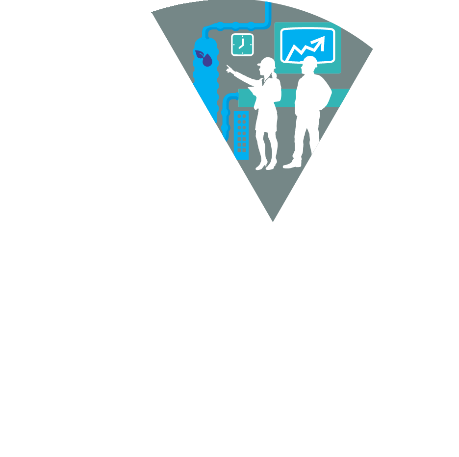
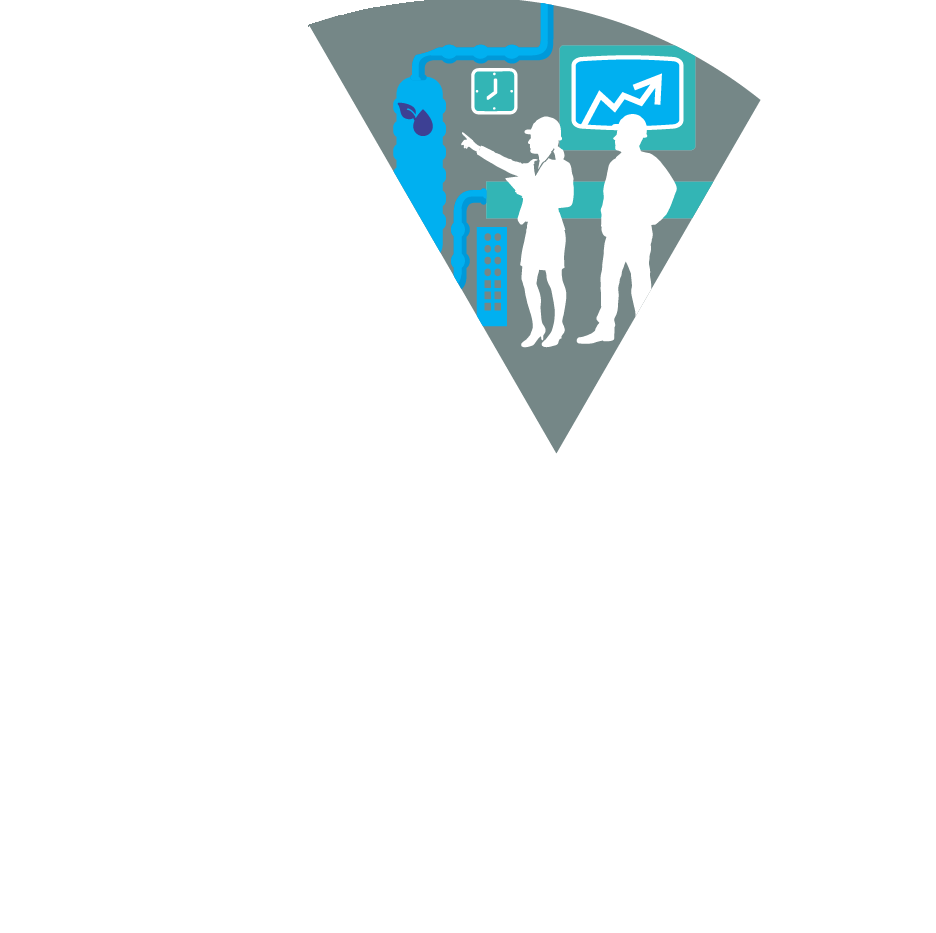

-
- Biodiversidade
-
- Emissão de Gases
-
- Tratamento de Água
-
- Serviços
-
- Energia
A Fiagril no Mundo
Conduzir nossos negócios de maneira sustentável significa para nós gerar valor para todos os envolvidos: parceiros comerciais, comunidades locais vizinhas às unidades, clientes, sociedade e investidores.
Responsabilidade e Parcerias Locais
Consideramos essencial para nossos negócios a adoção de posturas, comportamentos e ações que promovam o bem-estar dos nossos colaboradores e da comunidade onde estamos presentes.
-
- Conformidade
-
- Comunidade
-
- Relação como Fornecedores
-
- Resíduos

 

-
- Desempenho
-
- Etica
-
- Educação
-
- Emprego
-
- Diversidade
-
- Saúde
Nossa Estrutura
Investir na ampliação dos conhecimentos de nossos funcionários impacta positivamente em produtividade e em desenvolvimento dentro da empresa.